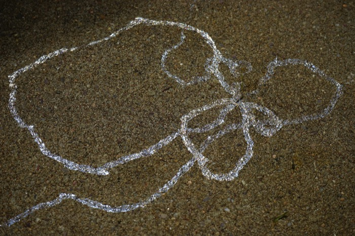

TCI Turns 10
Dear reader,
The Creative Independent is now ten years old. That’s a little over a quarter of the Web’s entire history. It’s wild to think how much and how little everything has changed. Many artists are dealing with the same questions: how to stay afloat in precarious times, how to juggle a creative practice and a day job, how to start something new, how to work through creative blocks.
Is creativity just a matter of spiraling back on the same questions over and over and little by little learning more about ourselves, our practices, our dreams, and each other?
In December 2017 we counted various words across the website (314 interviews), and promised to update the list on occasion. Here it is again, ten years in: the same words (and a few new ones) across all 2,135 published interviews (5.2 million words).
6,523
292
26
561
352
278
1,322
1,049
7,245
786
87
338
1,668
2,721
196
154
6,408
3,678
29,728
3,062
8,351
495
7,218
1,610
9,006
44
3,185
1,046
9
264
10
310
1,323
1,006
On spiraling around
October 14, 2016
Why spiral? We like spirals because they’re about circling back to a core idea over time, something all creative people must do to create whatever it is they’re creating. We think Julia Cameron, in her self-help book The Artist’s Way, puts it best:
“You will circle through some of the issues over and over, each time at a different level. There is no such thing as being done with an artistic life. Frustrations and rewards exist at all levels on the path. Our aim here is to find the trail, establish our footing, and begin the climb.”
Snails (and other gastropods like slugs) excrete slime. They make this slime to move, so that their bodies don’t lose moisture to the rugged terrain beneath them. This slime is beautiful because it glimmers. It’s also beautiful because it’s a map of time recently spent by the snail. Where is the snail now? And where was it going in the first place?

We think the snail is a good mascot for TCI, as it is biologically forced to leave its slime (process, path) everywhere. You could say our goal is to illuminate the (often hidden) slime of the artists we talk to. You could say we are a growing archive of slime. Perhaps it’s a worthy goal, as the snail’s trail doesn’t last long. Even slime evaporates.
– Spiral note by Laurel Schwulst
A library for the next 10 years
Below we’ve chosen zines and guides for the next 10 years, available as PDFs.
3,664 days, 0 hours, 0 minutes, and 0 seconds until September 26, 2036
We launched TCI on September 26, 2016 with the goal of becoming an evergreen resource of practical and emotional guidance. The first interview was with Eileen Myles, and our first event was a public conversation with Ian MacKaye.
My original inspiration for the site was the punk zines that guided me as a teenager. These homemade publications taught me how to write and to distribute my work, and how to not only think about doing something, but to do it. They helped me find my voice and my community.
I’ve made sure to stick to that ethos in everything we do on TCI, without succumbing to the temptation to expand in ways that didn’t feel right. The goal is to keep TCI humble, honest, and useful.
Thank you so much for reading TCI over the years, and for reaching out with such kind, thoughtful words. It’s endlessly appreciated. There’s only one person checking the inbox and these notes keep me going.
Here’s to many more days.
Real Snail
Producer/Editorial: Brandon Stosuy
Design & Development: Elliott Cost (Bell Kiosk)
Social Graphics: Mikki Janower
Image credits:
Snail shell: Theba geminata
by H. Zell, CC BY-SA 3.0, resized and desaturated.
Fossil: Catellocaula vallata
by Mark A. Wilson, public domain.
{kind=link}
{kind=link}